1 How does carbon cycle through the Earth and why does it matter?
Notes to Myself
xxxxxxx
OVERVIEW
LEARNING OBJECTIVES
- Learn how carbon flows through the Earth to be recycled.
- Discuss what factors and physico-chemical properties influence its concentration in the different reservoirs.
- Discuss what feedback regulates \(\textcolor{black}{\ce{CO2}}\) in the environment and is the implication for Earth’s climate.
- Discuss how the carbon cycle plays a role in Earth’s stability.
- Discuss what could affect the carbon cycle and how.
PREAMBLE
In this chapter, we will explore the dynamics and processes of the biogeochemical cycles such as for water and especially carbon. How does Earth recycle its water and carbon and why is it important for Earth’s climate stability?
We will also discuss the unique physico-chemical properties of carbon and its molecules that make it essential to Earth.
1.1 INTRODUCTION
1.1.1 The Carbon cycle
Carbon as water is also essential for life. It is the central element of organic molecules and in climate (\(\textcolor{black}{\ce{CO2}}\)). The carbon cycle links the carbon in organic, atmospheric, oceanic, mantle and rocks. The resulting balance supports life and climate stability.
Despite the luminosity of the sun increasing, the continents moving, ice age and warm periods occuring, life changing and oxygen appearing, the temperature of the Earth remained between 0\(\circ\)C and 100\(\circ\) C. The amount of \(\textcolor{black}{\ce{CO2}}\) in the atmosphere is small compared to the carbon present in surface sediments as \(\ce{CaCO3}\) and organic molecules. The key role in climate stability is the partitioning between \(\ce{CO2(g)}\) and \(\ce{C(s)}\).
1.1.2 Reservoirs of carbon
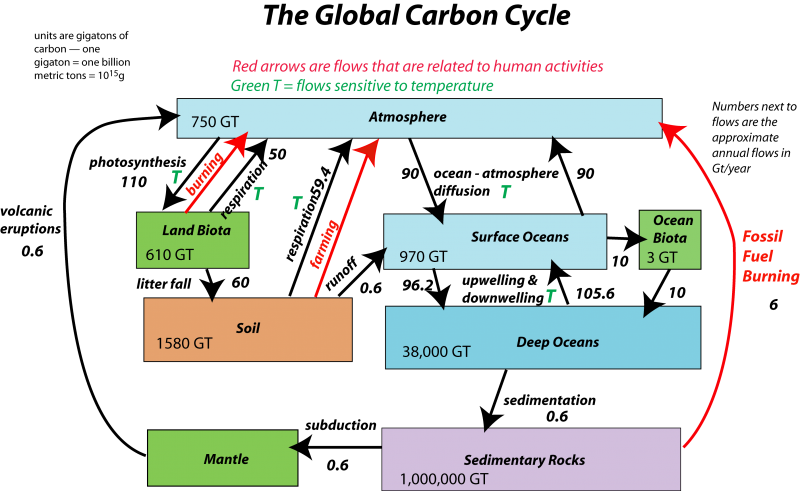
Most carbon is found as inorganic (minerals) but organic (animals and plants) form also is important (Figure 1.1). Reservoirs for the inorganic carbon are: atmosphere, oceans, sediments and sedimentary rocks (limestone and dolostones).
Oceans are a key player in the system; they are sources as well as sinks for \(\textcolor{black}{\ce{CO2}}\). At equilibrium \(\textcolor{black}{\ce{CO2}}\) flux from sources is balanced by sinks. However, when the equilibrium is disturbed like fossil fuels burning, most of the oceans are sinks for \(\textcolor{black}{\ce{CO2}}\) (check how the tropical Pacific ocean behaves like a carbon source research.noaa.gov).
1.2 Chemistry with carbon
1.2.1 Reaction with water:
\(\textcolor{black}{\ce{CO2}}\) from the atmosphere reacts with water (in rain drops or seawater) as follow:
\[ \ce{CO2(g) <=> CO2(aq)} \tag{1.1}\]
\[ \ce{CO2(aq) + H2O <=> H2CO3(aq)} \tag{1.2}\]
\[ \ce{H2CO3(aq) <=> H+ + HCO3- (aq)} \tag{1.3}\]
\[ \ce { HCO3- (aq) <=> H+ + CO3^{2-} (aq)} \tag{1.4}\]
How much atmospheric \(\ce{CO2}\) diffuses and dissolves into sea surface depends on the temperature of the water, its concentration on \(\ce{CO2}\) but also on the wind and the mixing of surface waters.
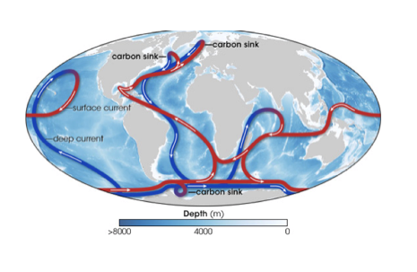
The circulation of dissolved \(\textcolor{black}{\ce{CO2}}\) in the oceans depends on the downwelling (cold, more saline and hence denser water sinks) and upwelling currents (warm, less saline water rises) which are parts of the deep ocean “conveyor belt” in Figure 1.2 (see NASA video).
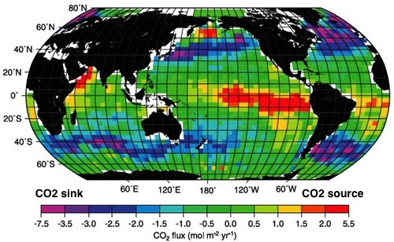
Question 1.1 Look at Figure 1.3. How can you explain the locations of the carbon sinks and sources?
What factors and how do they affect \(\textcolor{black}{\ce{CO2}}\) solubility in water?
1.2.2 Chemical weathering
The slightly acidic water reacts with crustal rock minerals like carbonates and silicates and cause weathering (carbonate weathering Equation 1.5 and silicate weathering Equation 1.6):
\[ \ce{CaCO3(s) + H2CO3(aq) -> Ca^{2+} (aq) + 2 HCO3- (aq)} \tag{1.5}\]
\[ \ce{CaSiO3(s) + 2 H2CO3(aq) -> Ca^{2+} (aq) + 2 HCO3- (aq) + SiO2(s) + H2O} \tag{1.6}\]
All the products are transported to rivers and then oceans. Most particulate materials are deposited near mouths of rivers in deltas, beaches, and near shores. The dissolved materials are distributed over the oceans.
Does the concentration of salts in oceans increase versus time?
Some of the calcium ions react with hydrogencarbonate to form calcium carbonate precipitate (Equation 1.7):
\[ \ce{ Ca^{2+} (aq) + 2HCO3- (aq) -> CaCO3(s) + H2CO3(aq) } \tag{1.7}\]
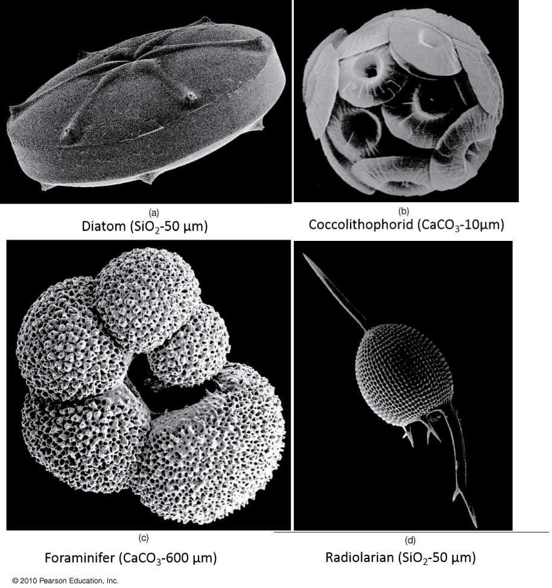
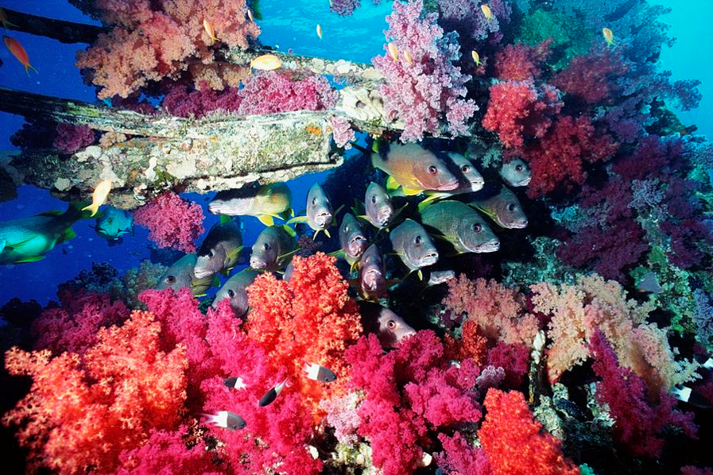
The formation of carbonic acid promotes the diffusion of \(\textcolor{black}{\ce{CO2}}\) from oceans to the atmosphere. The precipitation of calcium carbonate (calcite and aragonite) is mainly done by organisms such as phytoplankton and zooplankton (corals make aragonite). \(\ce{SiO2}\) is also used by plankton like diatom and radiolarian ( Figure 1.4). Read more about plankton on this website: The plankton Chronicles.
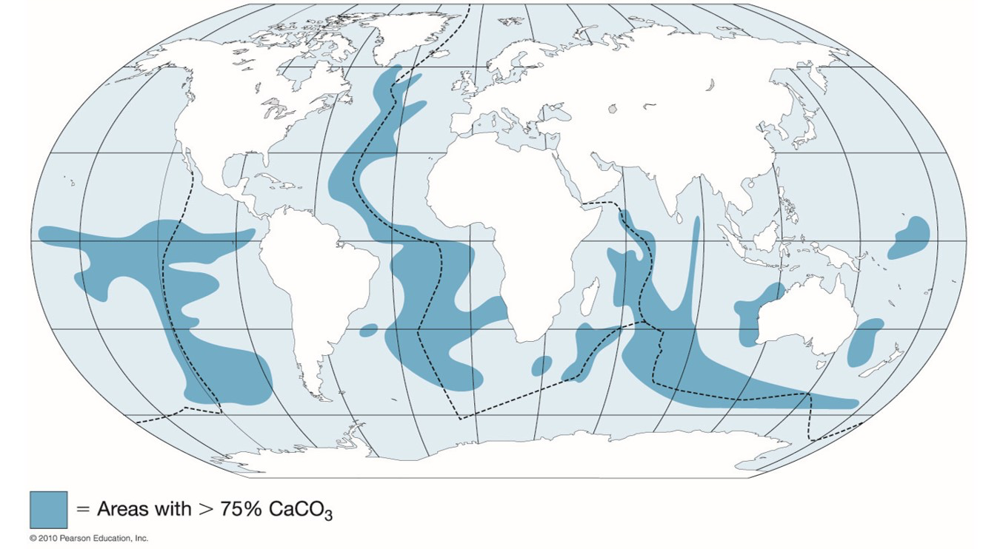
What happens when the organisms die? From Figure 1.5, explain why there is high carbonate density at these geographical locations.
Quick Check 1.1
- What factors and how do they affect carbonate dissolution?
- Do carbonates behave the same as other minerals? Why?
Notes to Myself {-}
What will happen to the CCD with increasing carbon emission? %Their carbonate skeletons fall to the seafloor (if not dissolved) and become a part of the sediments (fig. \(\ref{fig-carbonate-sediment}\)). Eventually, by seafloor spreading the sediments are carried to depth and buried. They become limestone reservoirs.
1.2.3 Silicate weathering net process
Carbonate weathering Equation 1.5 is balanced out by carbonate precipitation Equation 1.7 and no net of \(\textcolor{black}{\ce{CO2}}\) is produced. Silica weathering Equation 1.8 is combined only with carbonate precipitation Equation 1.9 and carbon dioxide in water Equation 1.10. The overall reaction Equation 1.11 shows a net conversion of atmospheric \(\textcolor{black}{\ce{CO2}}\) to solid \(\ce{CaCO3(s)}\) i.e. a net outflow of \(\textcolor{black}{\ce{CO2}}\) from the atmosphere reservoir to the ocean.
\[ \ce{CaSiO_3(s) + 2H2CO3(aq) -> Ca^{2+}(aq) + 2HCO3^-(aq) + SiO2(s) + H2O} \tag{1.8}\]
\[ \ce{Ca^{2+} (aq) + 2 HCO3^-(aq) -> CaCO3(s) + H2CO3(aq)} \tag{1.9}\]
\[ \ce{CO2 + H2O <=> H2CO3(aq)} \tag{1.10}\]
\[ \ce {CaSiO_3(s) + CO2 -> CaCO3(s) + SiO2(s)} \tag{1.11}\]
The silicate weathering rate increases with temperature and with rain (water is the reaction medium).
Although the conversion rate is small (0.03 Gton(C)/year), it is significant to cause carbon depletion in the atmosphere over one million years. This means there is a need for a return flux to the atmosphere: The carbonate-silicate geochemical cycle.
1.3 The Carbonate-Silicate geochemical cycle
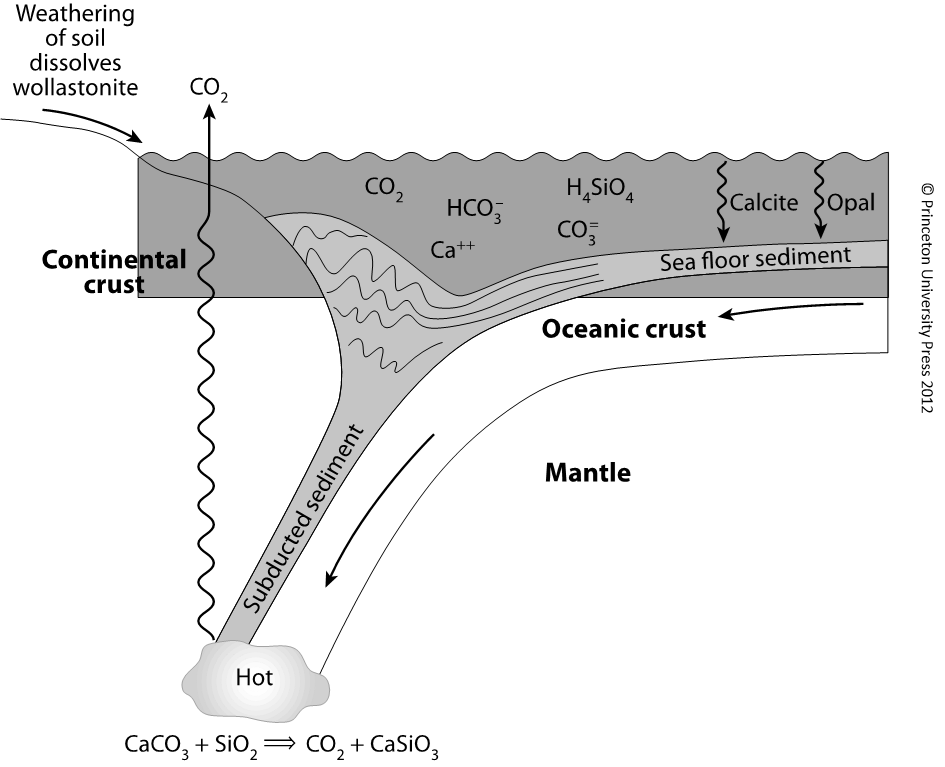
The return flux to the atmosphere is provided by the plate tectonics with metamorphic and volcanic \(\textcolor{black}{\ce{CO2}}\) inputs. The volcanic \(\textcolor{black}{\ce{CO2}}\) comes from the mantle at mid-ocean ridges (divergent margin) and along convergent margins (Figure 1.6). At depth with high temperature and pressure, the subducted sediments undergo metamorphism (Equation 1.12).
\[ \ce { CaCO3(s) + SiO2(s) -> CaSiO_3(s) + CO2(g)} \tag{1.12}\]
In the case that the temperature is high enough, magmas form and erupt from volcanoes and release \(\textcolor{black}{\ce{CO2}}\). This cycle prevents \(\textcolor{black}{\ce{CO2}}\) depletion in the atmosphere and the ‘’Snowball’’ fate.
What causes the mantle to melt and the formation of magma at the subduction zone? Is temperature the only factor? (hint: what can cause a decrease of the melting point?)
What is the difference with magma formation at mid-ocean ridges (divergent margin)?
What is the ‘’Snowball’’ fate and did it happen on Earth? Can you recover from it? How?
1.4 The Tectonic thermostat: Long-term feedback in C-Si cycle
Figure 1.7 shows the global inorganic carbon cycle. How are the reservoirs kept at steady state? Is the rate of volcanism affected by \(\textcolor{black}{\ce{CO2}}\) or by the climate at the surface of the Earth?
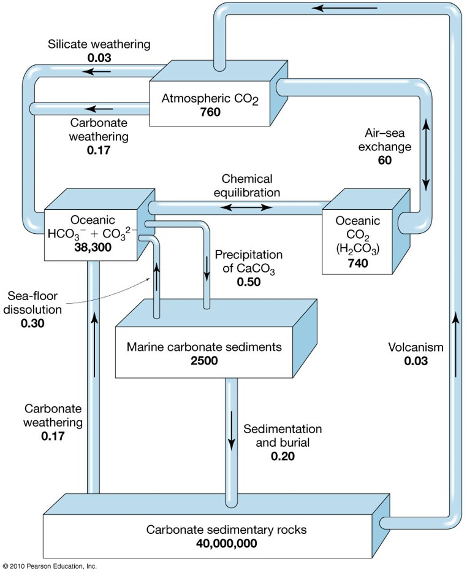
The key in the regulation of \(\textcolor{black}{\ce{CO2}}\) on long time scales (i.e. million years) is the feedback between the climate and the rate of silicate weathering. The climatic factors responsive of silicate weathering and of the concentration of \(\textcolor{black}{\ce{CO2}}\) are the temperature and the net rainfall. An increase in temperature or rainfall increases silicate weathering. The negative feedback loop regulates and stabilizes \(\textcolor{black}{\ce{CO2}}\) and hence the climate on long time scales.
What are negative feedback loops? A negative feedback loop is a process that counteracts changes in a system, helping to maintain stability. For instance, as illustrated in Figure 1.8, if a factor (known as a forcing) disrupts your body temperature, your body responds by initiating processes such as shivering or sweating. These responses work to bring your body temperature back to homeostasis (equilibrium).
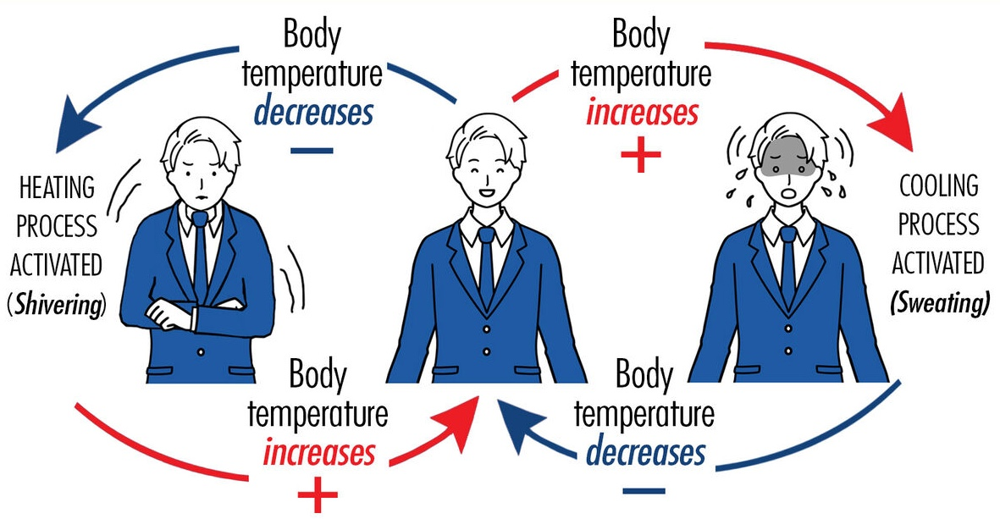
Do you know any other biological feedback loops?
Question 1.2 Draw the negative feedback loop connecting surface temperature, silicate weathering rate, atmospheric \(\textcolor{black}{\ce{CO2}}\) and greenhouse effect. Explain how this loop regulates temperature.
What do you think is the role of plate tectonics in the biogeochemical cycles? How important is its role? What would happen if tectonics mechanisms stopped?
1.5 Short term carbon cycle: Organic carbon
1.5.1 Reservoir and Feedback
The short-term organic carbon cycle include the processes of photosynthesis and respiration and also the slow process of decomposition. The key players are the primary producers who produce energy for other organisms through photosynthesis Equation 1.13 or chemosynthesis Equation 1.14.
\[ \ce{6CO2 + 6H2O -> C6H12O6 +6O2} \tag{1.13}\]
\[ \ce{CO2 + 4H2S + O2 -> CH20 + 4S + 3H2O} \tag{1.14}\]
Figure Figure 1.9 shows a typical \(\textcolor{black}{\ce{CO2}}\) reservoir with inlet and outlet from the organic carbon flow.
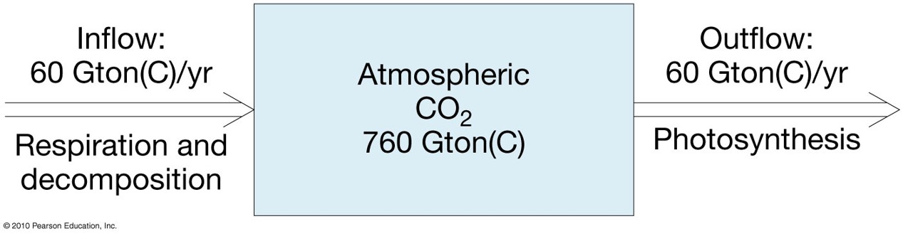
What kind of feedback loop exists between the photosynthetic rate and the pressure of \(\textcolor{black}{\ce{CO2}}\) in the atmosphere? What is its effect on atmospheric \(\ce{CO2}\)?
Most of the organic carbon from plants has a residence time of only decades. Most of the biomass (total mass of organic matter in living organisms in a specific reservoir) of primary producers is in the roots and trunks of trees. Consumer biomass represents only 1% of the producers’ biomass.
1.5.2 The biological pump
The oceanic biological pump (Figure 1.10) helps the organic carbon to be transported in the ocean and also transformed into different compounds. It is driven by marine life and follow the same mechanisms as terrestrial biomass (mainly photosynthesis, respiration, decomposition, and consumption).
Read more: The ocean’s `biological pump’ captures more carbon than expected.
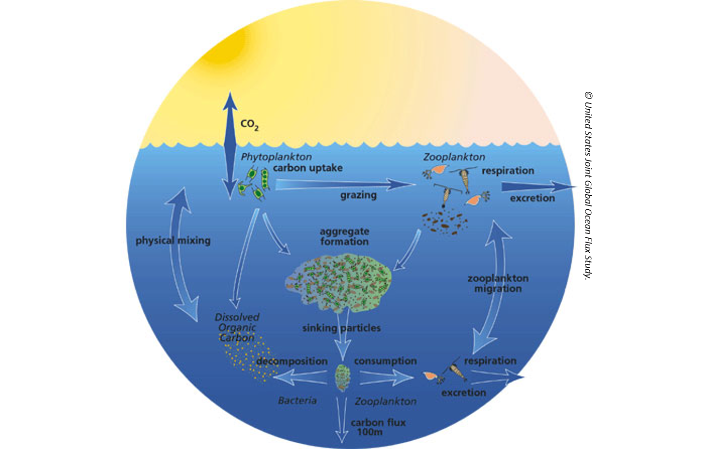
1.6 Let’s recap our findings
1.6.1 Carbon cycle map
Use Figure 1.11 to draw the long term carbon cycle and short term cycles.
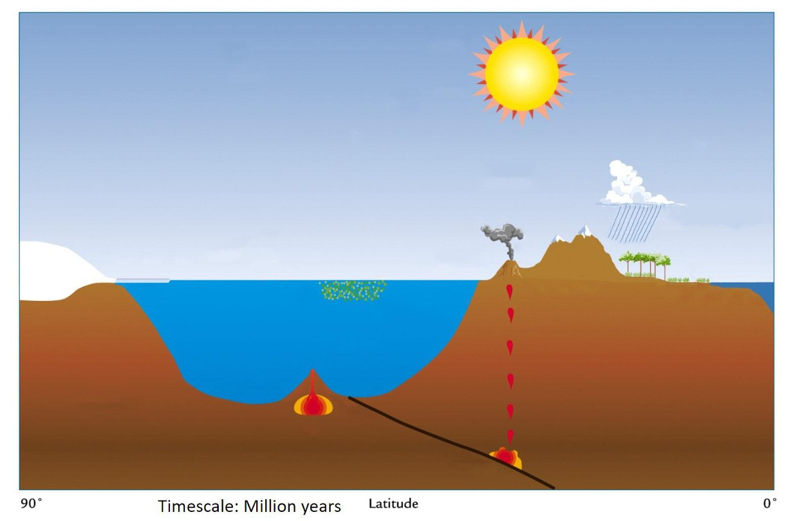
- Show how carbon flows between reservoirs (processes) in the map.
- What influence the amount of \(\textcolor{black}{\ce{CO2}}\) in the atmosphere?
- Indicate the physico-chemical reactions occurring along the processes.
- Identify the negative feedback loop in the map.
- Identify sources and sinks.
- Indicate time scale.
- Why do we say that the carbon cycle connects all Earth subsystems (Figure 1.12)?
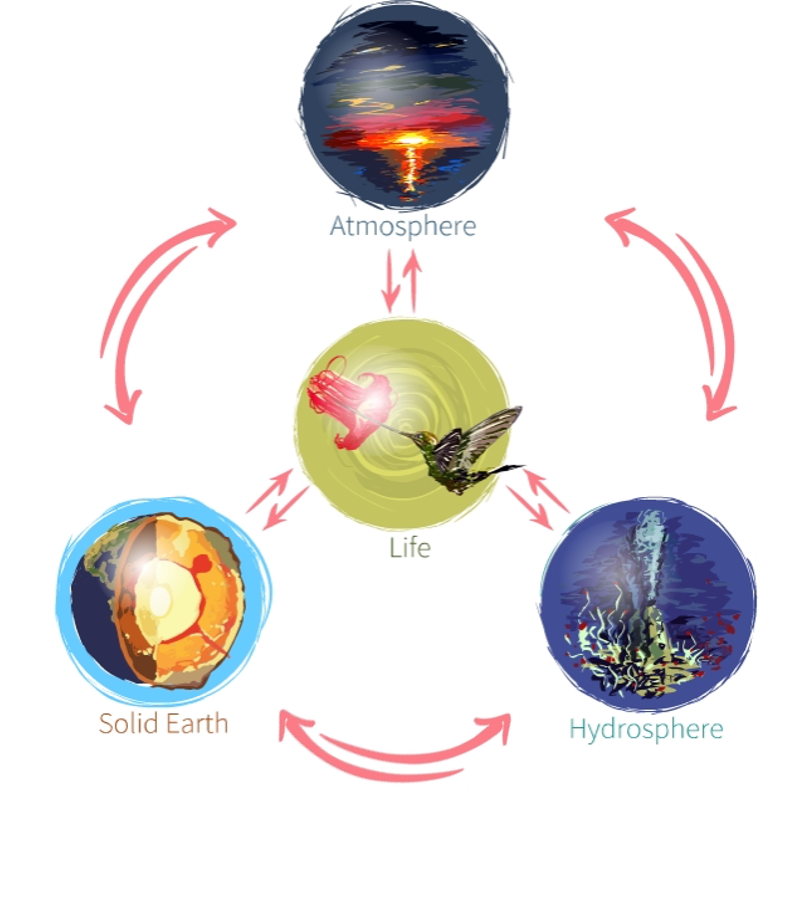
1.7 Modelling activity: Radioactive decay (\(^{14}C\))
In this activity, we will explore the role of radioactive decay in understanding Earth’s processes. We will model the decay of Carbon-14, a key isotope used in radiocarbon dating, which serves as a geochronometer to determine the age of carbon-based materials. This method is crucial for tracing the history of organic remains within the carbon cycle.
Additionally, radioactive isotopes like Carbon-14 act as geotracers in studying ocean circulation patterns, such as the global conveyor belt. These geotracers help us track the movement of water masses over long timescales, offering insights into ocean dynamics and climate regulation.
Moreover, Carbon-14 can also serve as a biomarker, helping us detect the presence of life by identifying organic materials in ancient samples.
Further instructions will be shared with a Python notebook.